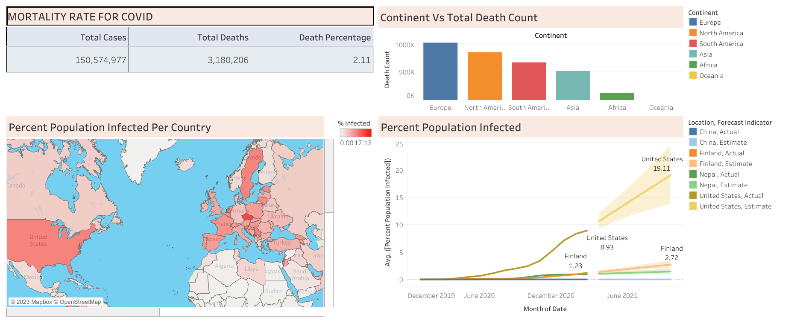
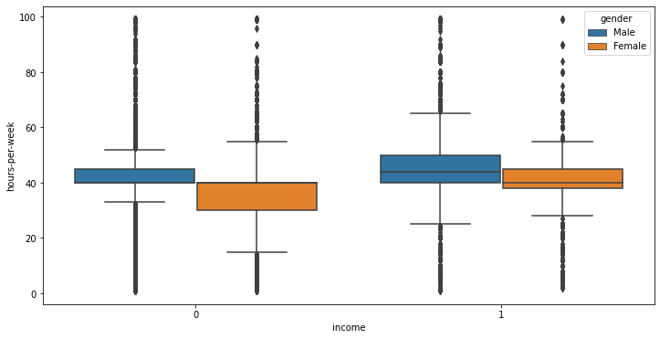

In this project, our main objective is to clean the data in the NashvilleHousing dataset using SQL queries. We are performing the following tasks:
1. Standardizing Date Format: We ensure that all date fields in the dataset are in a consistent format.
2. Populating Property Address: We fill in any missing property addresses using available information.
3. Splitting Addresses: We break down the complete addresses into separate fields for street, city, and state.
4. Converting "Y" and "N" to "Yes" and "No" respectively: We update the "Sold as Vacant" field to have clearer values.
5. Removing Duplicates: We eliminate duplicate records from the dataset.
6. Deleting Unused Columns: We remove any columns that are not required for our analysis.
By executing these SQL queries, we achieve a cleaner and more organized NashvilleHousing dataset, ready for further analysis and processing.


In this project, we conduct a comprehensive data exploration of COVID data. Our approach involves utilizing a wide range of SQL techniques, including JOINs, Common Table Expressions (CTEs), Temporary tables, Window functions, Aggregate Functions, creating views, and various other fundamental queries.
By leveraging these SQL techniques, we gain valuable insights and perform in-depth analysis on the COVID dataset, allowing us to draw meaningful conclusions and make data-driven decisions.

In this project, we created an interactive dashboard using the COVID dataset explored through the SQL project on the left side. To build the dashboard, we opted for Tableau Public, which offers free access. However, due to limitations in the free version, we couldn't connect directly to the SQL server. Instead, we imported the data as an Excel file to visualize the insights effectively.

Throughout the project, we utilize pandas for efficient data manipulation and cleaning, numpy for numerical computations and array operations, seaborn for creating visually appealing statistical visualizations, and matplotlib for generating customizable plots and charts.In this project, we leverage various Python libraries, including pandas, numpy, seaborn, and matplotlib, to perform essential tasks such as data cleaning, analysis, and visualization. We have chosen to work within the Jupyter Notebook environment to facilitate a seamless and interactive workflow.

In this project, we utilize Python libraries (pandas, numpy, seaborn, and matplotlib) within Jupyter Notebook for data cleaning, analysis, and visualization on the Income Dataset. These tools enable efficient manipulation, numerical computations, and visually appealing charts, helping us gain valuable insights. After data analysis, we also prepare the data and use it to train a machine learning model using the Naive Bayes algorithm. This model predicts the mortality rate for passengers based on features such as ticket class, age, ticket price, and gender.
In this project, we used ticket class and gender as features from the Titanic dataset to predict passenger survival. The random forest algorithm was employed, and we fine-tuned the hyperparameters through cross-validation. Additionally, we developed and deployed a straightforward web application for the model using the streamlit.io platform.
In this project, we built a machine learning model to classify the Iris flower type using features like sepal length, sepal width, petal length, and petal width. For this classification task, we employed the K Nearest Neighbors (KNN) algorithm. To make the model accessible and interactive, we deployed a web application using the streamlit.io platform.